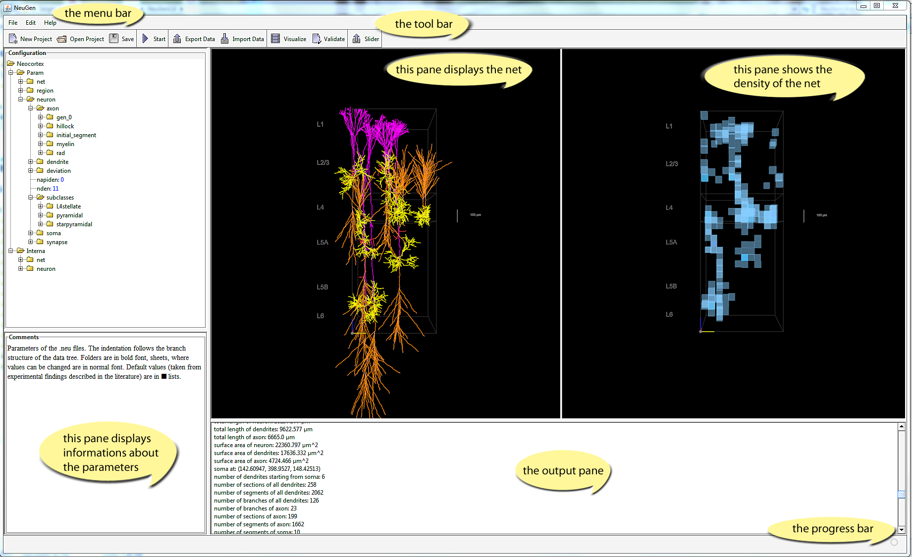

To edit the entries, enter the branch, right click on the entry and type the new value in the Edit Textfield.
All recommended values are given in brackets in the tables in the appendix and are taken from experimental findings. These are also the default values.
In Param you can set, what types of cells and how many of them shall be generated. Also you can influence, the number of synapses, that will be generated and change some features of neurons and their parts.
All relevant cell types found in the neocortex can be generated with NeuGen and include L2/3 pyramidal cells, L4 stellate neurons and starpyramidal cells, as well as L5A and L5B pyramidal cells.
Without visualization the total number of neurons generated can be as high as 5000. For visualization the number is limited to about 250, depending on computer capacities.
The values, which can be set are not all absolute parameters. Except for the numbers of cells, all parameters are scaled with random numbers to provide the possibility of generating realistic networks, which vary in form and size.
net contains information about the types and numbers of neurons generated, and a parameter to influence the number of synapses.
neuron contains information about the appearance of a single cell. Parameters of all neuron parts, including axon, dendrites, soma and synapses, as well as the deviation from the “abstract base neuron” and the numbers of dendrites can be changed. For beginners it is recommended to use the default settings (see appendix).
In Interna internal generation parameters are stored. Changes in this file can result in severe changes of the appearance of the cells. Therefore, the parameters in this file should only be changed by very experienced users.